Swin Transformer
Contents
Swin Transformer#
Abstract#
Shifted Window를 통해서 Representation을 계산하는 Hierarchical Transformer를 제안한 논문.
이미지를 겹치지 않는 Window 단위로 쪼개고 각 Window 내부에서만 Self-attention을 진행.
Window 내부에서만 Self-attention을 진행하기 때문에 매우 효율적임.
Window를 이동시킴으로써 다른 Window가 가진 정보들과 섞어 줄 수 있음.
Introduction#
Transformer를 범용적으로 사용가능한 Backbone으로써 이용하려함.
Transformer를 Vision Task에 잘 적용하기 위해서는 NLP와 Vision 간의 차이점을 알아야함
NLP와 Vision의 다른점
Obejct의 다양한 Scale
NLP의 기초 요소인 Word token는 항상 동일한 크기를 가지는 것에 반해 Vision에서는 각 요소(object)의 크기가 다름
기존의 Transformer는 Token의 Scale을 고정시키는데 이것은 Vision Task에 맞지 않음
Image의 다양한 Resolution
문장의 길이와 다르게 Image의 Pixel은 더 큰 해상도를 가짐
Image 해상도에 따라 Qudartic한 연산량을 가진 Transformer는 고해상도 일 수록 다루기 힘듬
위 2가지 해결책을 통해서 Swin Transformer를 범용적 Backbone으로 사용하려고 함
Key Design
Self-attnetion이 적용됨에 따라 Window가 이동하는 것
이동된 Window는 다른 Window와 연결되면서 Modeling Power를 높임
Window 내부에 있는 모든 Query는 같은 Key 값을 가짐으로 메모리에 효율적임
이전에 나왔던 Sliding Window는 Query 마다 Key가 다르기 때문에 Memory에 효율적이지 않음
이전에도 Self-attention을 Window내부에만 적용하는 시도가 있었지만 최적화를 시키지 못해서 메모리 접근속도가 CNN보다 느렸고, 성능은 ResNet보다 아주 조금 좋았음
Self-attention/Transformer to complement CNNs#
Self-Attention은 Heterogeneous interaction과 distance dependency를 Encoding하기 때문에 backbone이나 head-network를 보완할 수 있음.
Heterogeneous interaction은 다른 종류의 상호작용으로 해석할 수 있는데 정확한 의미는 모르겠음.
본 논문에선 Transformer를 Feature Extractor로서 사용하여 CNN Backbone을 대체함
Transformer based Vision Backbone#
Vanila VIT는 이미지 크기에 따라 연산량이 증가하는 것과 Low Resolution Feature map을 가지는 것 때문에 Dense Task에 좋지 않음
Pyramid Vision Transformer가 Multi Scale Feature map을 만들어서 본 논문과 가장 유사하지만 연산량 증가는 여전히 Qudratic함
Method#
Overall Architecture#
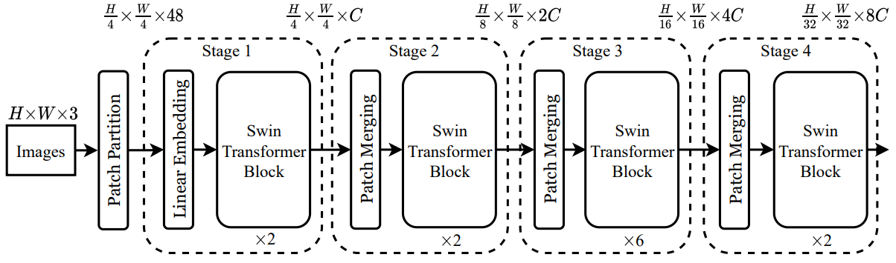
Stage 1.
Input Image는 ViT와 같이 non-Overlapping으로 split 해주고 각 Patch를 Token으로 다룸
Patch size는 4 x 4 이고, 각 Patch 의 Feature Dimension은 4 x 4 x 3 = 48 임
Linear Embedding을 통해서 Raw-Valued Feature를 임의의 Dimension으로 Projection함
Projection된 값을 Swin Transformer Block에 입력으로 줌
Stage 2.
Patch Merging Layer에서 2x2 범위의 Patch들을 1개로 concat 해주고 linear layer를 통과시킴
Patch dimension이 C에서 4C로 변경되고 linear layer를 통해서 2C로 다시 변경됨
Patch Merging Layer 덕분에 원래 4C가 되어야 하지만 2C로 Token의 수가 줄어듬
Stage 3.
Stage 2. 를 반복함
Swin Transformer Block#
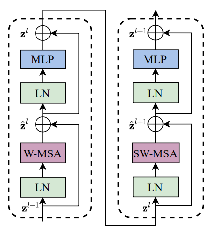
기존의 Multi Head Attention 모듈 대신에 Shifted Window 기반의 Multi Head Attention을 사용함
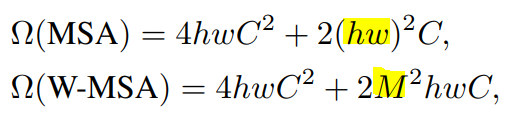
W-MSA와 SW-MSA를 통해서 기존 문제점인 이미지 크기에 따른 Quadratic한 연산량 증가를 선형증가로 바꿔줌
MHA 이외의 다른 Layer는 모두 기존 Transformer Block과 동일함
Shifted Window Based Self-Attention#
Self-attention in Non-Overlapped Windows#
효율성을 위해 Window 내부에서만 Self -attention을 진행함
각 Window는 겹치지 않고 M x M Patch들을 포함함
Shifted Window Partitioning in Successive Blocks#
Window 내부에서만 Self-attention 연산을 하기 때문에 Window 간 정보 교환이 없어서 Modeling Power가 약함
Modeling Power를 높이기 위해 Window를 이동 시킨 후에 다시 한번 Self-attention을 진행함
Efficient batch computation for shifted configuration#
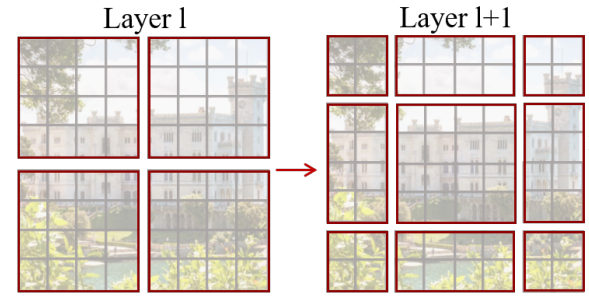
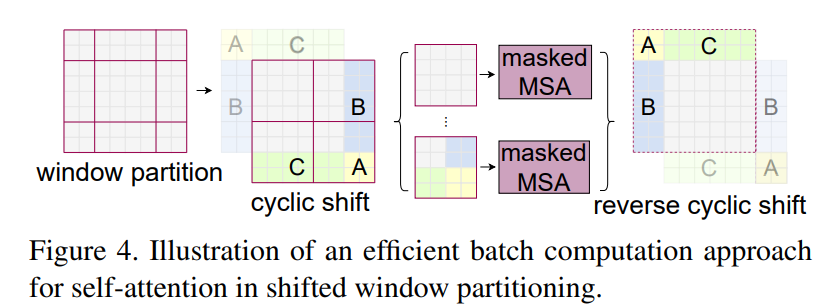
Window를 왼쪽 상단 기준으로 2x2 만큼 움직이게 되면 2 x 2 Window가 3 x 3 Window로 개수가 증가함
빈 공간을 새로운 Window로 채워야하기 때문에 개수가 증가함
개수가 증가하면 Self-attention을 그만큼 더 해야 하기 때문에 비효율적
효율적인 연산을 위해
Cyclic shift사용원래 있던 Window를 쪼개서 붙여줌
Figure 4. 에서 이동으로 인해 밀려나간 왼쪽 상단 A, B, C 부분을 때서 이동으로 인해서 새로 생긴 공간에 넣어줌
Window 간의 정보교환이 이루어져서 Modeling Power 증가
Window 개수가 늘어나지 않기 때문에 연산량 보존 가능
Relative Position Bias 사용#
다른 Transformer와 다르게 Position Embedding 값을 더 해주지 않고 Relative Position Bias를 사용함
Position Embedding은 patch에 절대 좌표를 더해주는 것, 본 논문에선 상대 좌표를 이용함
Relative Position Bias를 Self-attention 단계에 넣어서 상대적 위치를 추가해줌
Relative Position 값의 범위는 [-M+1, M-1]
각 축을 기준으로 만든 Matrix를 더해서 Relative Position Matrix를 완성함
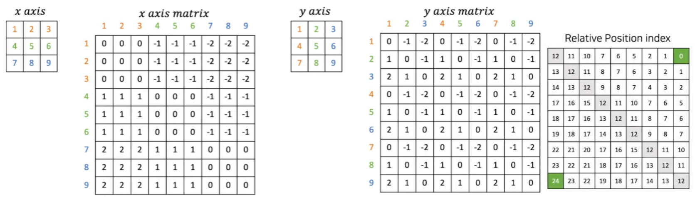
x축 기준으로 보면 왼쪽 상단 행렬에서 1,2,3이 같은 축, 4,5,6이 같은 축, 7,8,9가 같은 축임
따라서 x axis matrix에서 같은 축에 있는 값들 간의 거리는 0으로 봄
음수 값과 양수 값의 경우 어떤 값을 기준으로 잡는지에 따라 다름(상대적)
1 → 4 로 진행하면 -1
1은 (0, 0)의 위치고 4는(1,0)의 위치로 볼 수 있음
축이 1만큼 차이 나기 때문
따라서 1을 기준으로 4까지의 거리를 구하면 0 - 1이 되서 -1이 됨
4 → 1 로 진행하면 +1
4는 (0, 0)의 위치이고 1은 (0, 0)의 위치로 볼 수 있음
축이 1만큼 차이 나기 때문
따라서 4를 기준으로 1까지의 거리를 구하면 1 - 0 이 되서 +1 이 됨
Relative Position Bias의 크기 = \(B \in \mathbb{R}^{M^2 \times M^2}\)
\(M\)은 Patch size이기 때문에 1개의 Window를 \(M^2 \times M^2\)으로 표현 할 수 있음
Bias Index Matrix의 크기 = \(\hat B \in \mathbb{R}^{(2M-1)\times (2M-1)}\)오
오른쪽 끝 Matrix를 보면 0 ~ 24 까지의 값을 가지고 있음
M = 3 이기 때문에 \(\hat B\)는 5 x 5의 값을 가짐, 따라서 0 ~ 24 까지의 수를 표현할 수 있음
5x5 행렬을 0부터 +1씩 되는 수로 채우면 총 0~ 24까지의 수만을 사용함
위의 방식으로 구한 값을 간단한 수식을 통해서 Relative Position Matrix로 변경할 수 있음
WINDOW_SIZE = 3 x_axis_matrix += WINDOW_SIZE - 1 y_axis_matrix += WINDOW_SZIE - 1 x_axis_matrix *= 2 * WINDOW_SIZE - 1 relative_position_matrix = x_axis_matrix + y_axis_matrix
이 수식을 통해서 각 값이 Index 값을 가지도록 해줌
최종적으로 구한 Bias 값을 SoftMax 연산 전에 더해줌
\[ Attention(Q, K,V) = \mathbf{SoftMax}(QK^T/\sqrt{d} + B)V \]Q와 K의 내적 값에 Scaling(\(\sqrt d\))를 해준 후 Bias를 더해줌
Architecture Variants#
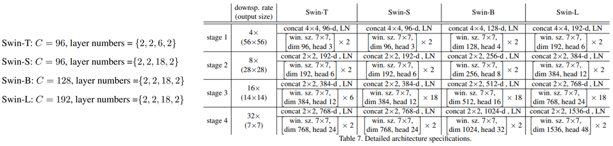
Swin-B는 ViT-B, DeiT-B와 모델 크기가 비슷하고 연산 복잡도도 비슷함
Swin-B를 기준으로 Swin-T/S/L은 각각 0.25배, 0.5배, 2배의 연산 복잡도를 가짐
Experiments#
1. Image Classification on ImageNet-1K#
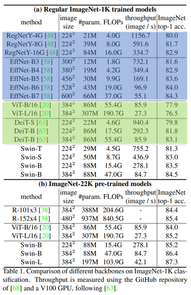
CNN과 비교했을 때 정확도 / 연산량 Trade Off는 Swin이 조금 더 좋음. 하지만 CNN 같은 경우 Architecture Search가 포함 되어 있는 단점이 있음
Transformer(ViT, DeiT)와 비교 했을 때는 Swin이 더 좋은 성능을 가짐
Swin-B를 ImageNet-22k로 pretraining 하면 1K를 scratch 학습 할 때보다 1.8% ~ 1.9% 더 잘 오른다고 함
2. Object Detection on COCO#
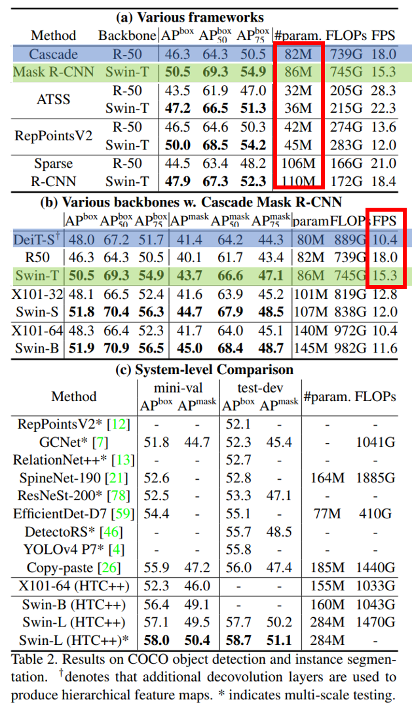
ResNet-50과 Swin-T를 비교하면 parameter 크기는 크게 차이나지 않지만 성능에선 꽤 차이가 나는 걸 볼 수 있음
비슷한 크기인 DeiT-S와 Swin-T를 비교했을 때 Swin이 조금 더 빠르고 성능이 더 좋음
3. Semantic Segmentation on ADE20K#
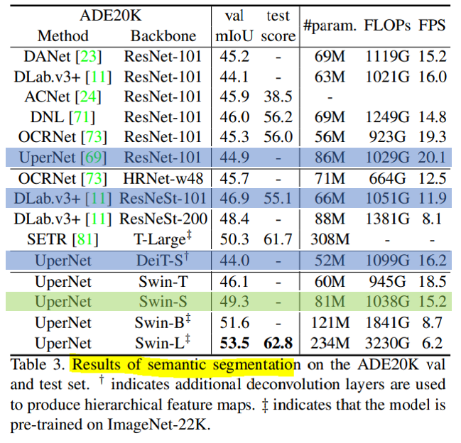
Swin-S가 비슷한 크기를 가진 DeiT-S보다 5.3 정도 더 성느이 좋음 그리고 ResNet-101과 ResNetSt-101보다 더 성능이 좋음을 볼 수 있음
4. Ablation Study#
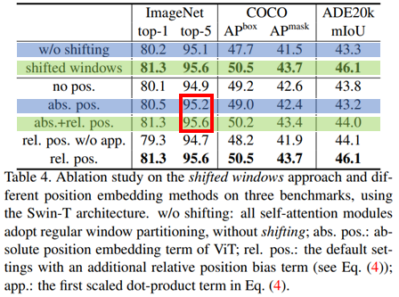
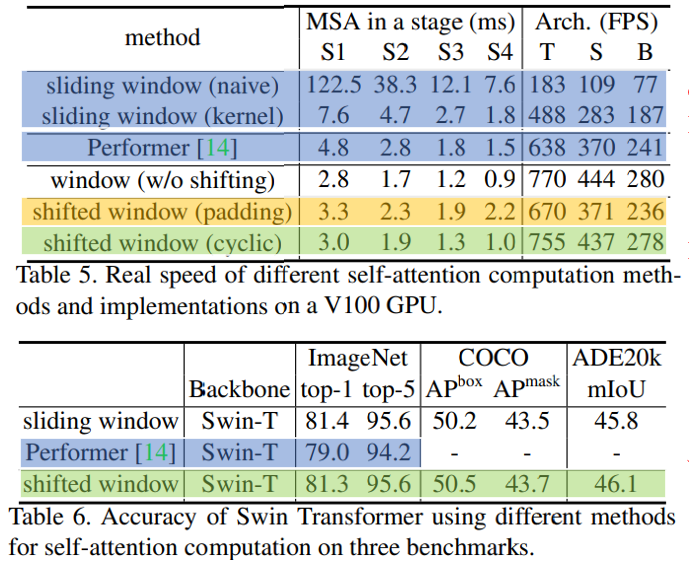
Stage 별로 Shifted Window를 적용 하는게 Shifting이 없는 것보다 모든 Task에서 성능이 더 좋음.
Shifted Window를 통해서 Window간 정보 교환이 성능에 좋은 영향을 준다는 걸 나타냄
Relative Position에 Absolute Position(절대좌표)을 추가하면 분류에선 0.4 정도 성능 향상이 있지만 Detection과 segmentation에선 성능이 더 떨어짐
Cyclic(Table 5. 초록색)과 Sliding(Table 5. 노란색)은 정확도는 비슷하지만 Stage가 깊어질 수록 Cyclic이 더 빠른 걸 볼 수 있음
이것을 통해서 Cyclic이 하드웨어에 더욱 친화적이다는 걸 확인 할 수 있음
가장 빠른 모델인 Performer(Table 5. 파랑색)보다 Shifted Window(Table 5. 초록색)가 미세하게 조금 더 바른 것을 볼 수 있고 정확도는 Sifted Window(Table 6. 초록색)이 훨씬 더 좋은 것을 볼 수 있음
Conclusion#
이미지 크기에 따라 선형적으로 연산 복잡도가 증가하는 Swin Transformer를 소개함
Shifted Window Base의 Self-attention이 더 효율적이고 효과적임을 보여줌
연산량을 크게 증가시키지 않고 Multi Scale Feature map을 만들어 Dense Task에서 좋은 성능을 냄
Author by 임중섭
Edit by 김주영